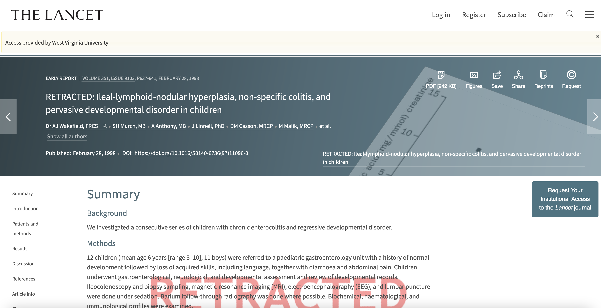
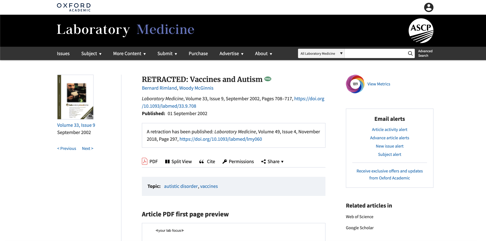
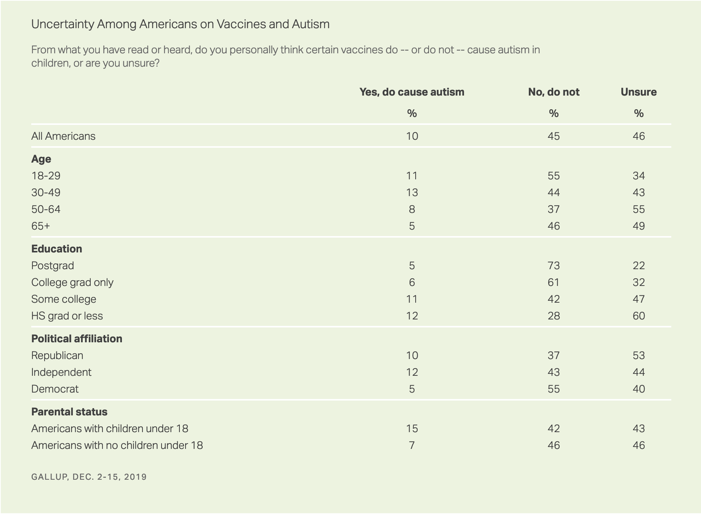
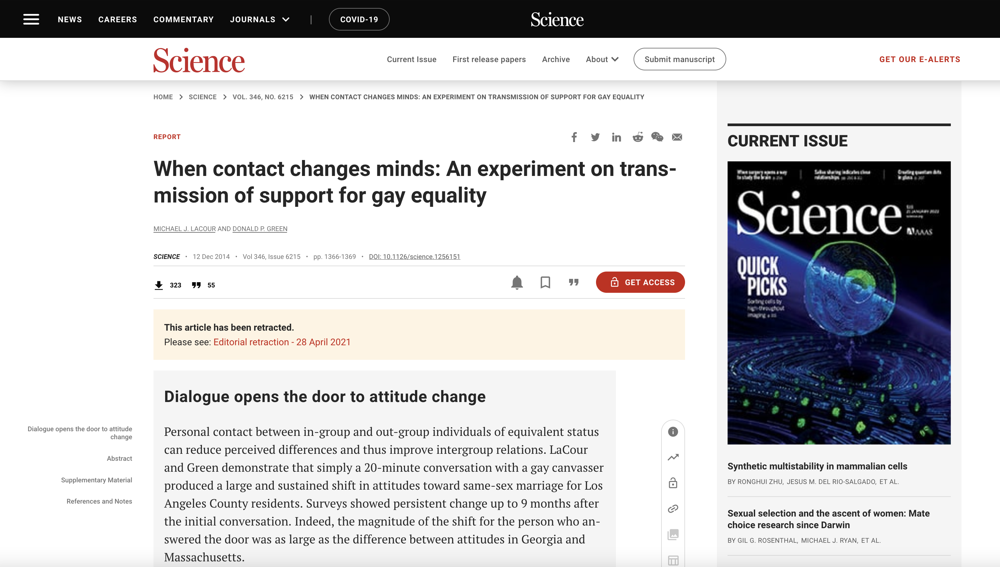

class: center, middle, inverse, title-slide # Ethics is Easy … Right? ## EDP 612 Week 3 ### Dr. Abhik Roy --- <script src="https://ajax.googleapis.com/ajax/libs/jquery/3.6.0/jquery.min.js"></script> <script type="text/x-mathjax-config"> MathJax.Hub.Register.StartupHook("TeX Jax Ready",function () { MathJax.Hub.Insert(MathJax.InputJax.TeX.Definitions.macros,{ cancel: ["Extension","cancel"], bcancel: ["Extension","cancel"], xcancel: ["Extension","cancel"], cancelto: ["Extension","cancel"] }); }); </script> <style> section { display: flex; display: -webkit-flex; } section { height: 600px; width: 60%; margin: auto; border-radius: 21px; background-color: #212121; } section p { text-align: center; font-size: 30px; background-color: #212121; border-radius: 21px; font-family: Roboto Condensed; font-style: bold; padding: 12px; color: #bff4ee; margin: auto; } #center { text-align: center; } .center p { margin: 0; position: absolute; top: 50%; left: 50%; -ms-transform: translate(-50%, -50%); transform: translate(-50%, -50%); } .center2 { margin: 0; position: absolute; top: 50%; left: 50%; -ms-transform: translate(-50%, -50%); transform: translate(-50%, -50%); } .tab { display: inline-block; margin-left: 40px; } </style> <style type="text/css"> .highlight-last-item > ul > li, .highlight-last-item > ol > li { opacity: 0.5; } .highlight-last-item > ul > li:last-of-type, .highlight-last-item > ol > li:last-of-type { opacity: 1; } </style> <div> <style type="text/css">.xaringan-extra-logo { width: 110px; height: 128px; z-index: 0; background-image: url(/Users/skynet/Documents/WVU/Teaching/GitHub.nosync/edp612/static/img/course_hex.png); background-size: contain; background-repeat: no-repeat; position: absolute; top:1em;right:1em; } </style> <script>(function () { let tries = 0 function addLogo () { if (typeof slideshow === 'undefined') { tries += 1 if (tries < 10) { setTimeout(addLogo, 100) } } else { document.querySelectorAll('.remark-slide-content:not(.title-slide):not(.inverse):not(.hide_logo)') .forEach(function (slide) { const logo = document.createElement('a') logo.classList = 'xaringan-extra-logo' logo.href = 'https://edp612.asocialdatascientist.com' slide.appendChild(logo) }) } } document.addEventListener('DOMContentLoaded', addLogo) })()</script> </div> --- class: highlight-last-item layout: true --- # Preface .center2[ This > may not a comfortable topic > is heavy so we will take breaks > will have sources and resources may make you feel sick or uncomfortable <br> <b><i><span style="color:#feb392">please feel free to get up and leave the room if you feel any discomfort</span></i><b> ] --- # Active Links Can Be Found by Clicking On Any .center2[ <center> <ul style="list-style-type:none;"> <li><b><span style="color:#03dac6;">term with the color</span> <span style="color:#92ddfe; font-size:21px;">blue</span></b> <br> <br> <li>or</li> <br> <li><b><span style="color:#c6ae86;font-size:21px;">screenshot</span></b> </li> </ul> </center> ] --- # What are ethics? -- .center2[ <b>The set of values, standards, and principles used to determine appropriate and acceptable conduct at all stages of the research process</b> ] --- # What do ethics not “care about”? -- + Being first to a discovery -- + Good or bad people -- + Keeping pace with peers -- + Maintaining [publish or perish](https://en.wikipedia.org/wiki/Publish_or_perish) -- + Professional pressures -- + Securing grants -- + Getting or keeping [Tenure](https://www.aaup.org/issues/tenure)<sup>1</sup>/retaining a job .footnote[ <sup>1</sup> As opposed to political rhetoric, this absolutely does NOT imply faculty are immune from being fired. ] --- # Ethics are imperfect + Accident -- + Missing something, especially with new methods or technology -- + One can become involved in research ethics violations + through the wrongs of others -- + Socially acceptable practice later deem wrong -- + Sometimes the right thing to do just isn’t clear -- + Self-deception and other psychological tendencies -- + Taking shortcuts --- # The Easier Cases (to identify) --- # Example: [Human Radiation Experiments](https://www.atomicheritage.org/history/human-radiation-experiments) -- + Commissioned by the United States Department of Defense and the Atomic Energy Commission -- + feeding radioactive material to mentally disabled children -- + conducting research on the effects of radiation on human subjects, including medical research on using radioisotopes to diagnose or cure disease -- + injections of plutonium given to semi-comatose cancer patients to determine how much uranium was needed to produce kidney damage -- + irradiating the testicles of prisoners -- + exposing U.S. soldiers to high levels of radiation without informing them -- + Many more examples exist! --- # Example: [Tuskegee Syphilis Study](https://www.cdc.gov/tuskegee/timeline.htm) -- + Conducted by the United States Public Health Service - now the CDC - to study the effect of untreated syphilis to determine the natural history of the disease -- + **Began in 1932** with **399 poor African American men** with *late-stage syphilis*. -- + **Ended in 1972** with a total of **600 poor African American men**. -- + *Participants* were offered "free medical care" in exchange for their medical data. -- + More than 400 individuals were not -- + told that they had syphilis *OR* + offered the standard treatment for syphilis *OR* + provided penicillin when it became available as a cure! -- + [At least 28 of the men died](https://www.nytimes.com/1972/09/12/archives/at-least-28-died-in-syphilis-study-reports-on-tuskegee-tests.html) of the disease and some unknowingly transmitted the disease to their wives and children. --- For more information, take a look at the following<sup>1</sup> .center2[ <iframe width="670.2" height="330.6" src="https://www.youtube.com/embed/ZV7RzS8QRXE" frameborder="0" allow="accelerometer; autoplay; clipboard-write; encrypted-media; gyroscope; picture-in-picture" allowfullscreen> </iframe> ] .footnote[ <sup>1</sup> Source: [TED-Ed](https://youtu.be/ZV7RzS8QRXE). ] --- # Example: [Stanford Prison Experiment](https://www.prisonexp.org/) (SPE) -- + Initiated to study roles of prisoners and guards -- + Students cast as prisoners and guards were curated from 70 applicants -- + Those with psychological problems, disabilities, prior records and a history of drug use were excluded leaving a sample of 24 individuals -- + A coin toss decided who who be a guard or prisoner -- + Initially a two-week experiment but lasted only six days -- + “Actors” blindly assumed and identified with their roles and brutality commences beginning Day 2. --- For more information, take a look at the following<sup>1</sup> .center2[ <iframe width="670.2" height="330.6" src="https://www.youtube.com/embed/KND_bBDE8RQ" frameborder="0" allow="accelerometer; autoplay; clipboard-write; encrypted-media; gyroscope; picture-in-picture" allowfullscreen> </iframe> ] .footnote[ <sup>1</sup> Source: [Khan Academy](https://youtu.be/KND_bBDE8RQ). ] --- # Interpretations and Results Stemming from the SPE -- + *Bystander Effect*: Individuals are less like to help a victim when others are present. -- + *Cognitive dissonance*: Conflicting attitudes, behaviors, and/or beliefs produces a feeling of discomfort leading to an alteration of one, if not all of the of the three items listed above to restore comfort. -- + *Conformity*: Changes in attitudes, behaviors, and/or beliefs in order to satisfy group norms and to fit in. -- + *Interpretation*: Ordinary people are likely to follow orders given by an authority figure, even to the extent of killing an innocent human being. -- + *Note*: Outcomes are [ disputed](https://www.nytimes.com/2018/07/16/health/psychology-studies-stanford-prison.html) --- # Example: Famous Retraction -- <center> <a href="https://www.thelancet.com/journals/lancet/article/PIIS0140-6736(97)11096-0/fulltext">  </a> </center> -- <br> <center> Paper was <a href="https://retractionwatch.com/2018/10/16/journal-retracts-16-year-old-paper-based-on-debunked-autism-vaccine-study/">retracted</a> <b>12 years</b> after publication </center> --- # Fallout <center> <a href="https://academic.oup.com/labmed/article/33/9/708/2504263?login=true">  </a> </center> -- <br> <center> Paper was <a href="https://retractionwatch.com/2018/10/16/journal-retracts-16-year-old-paper-based-on-debunked-autism-vaccine-study/">retracted</a> <b>16 years</b> after publication </center> --- # So what? -- + Damage has been done -- + We are observing the effects right now --- # Gallup Poll -- .pull-left[ <center> <a href="https://news.gallup.com/poll/276929/fewer-continue-vaccines-important.aspx">  </a> </center> ] -- .pull-right[ As of November 2021, unvaccinated people aged 18 years or older are four (4) times more at risk of (1) testing positive and (2) 15 times of dying<sup>1</sup> from COVID-19 than those who are vaccinated. ] .footnote[ <sup>1</sup> [CDC](https://covid.cdc.gov/covid-data-tracker/#rates-by-vaccine-status) ] --- # Example: Not so Famous Retraction -- <center> <a href="https://www.science.org/doi/10.1126/science.1256151">  </a> </center> --- # The Harder Cases (to justify) --- # What is an ethical dilemma? -- + Activity An ethical paradox in decision making between -- + Go over to [Psychology Today](https://www.psychologytoday.com/blog/how-do-life/201706/ethical-dilemmas ) and take a look at some everyday ethical dilemmas. -- + Get in your group and provide a few examples of ethical dilemmas --- # Things to Consider -- + Do you consider yourself to be ethical? -- + Do you have be an ethical person to perform ethical research? --- # Moral Foundations of Research -- + Doing good for humans, animals, the planet, future generations, etc. -- + Duty to respect to all animals -- + Obligations to society -- + Pursuit of truth and knowledge --- # Moralism is Defined by a Society or Culture at a Moment -- .pull-left[ <span style="color:#03dac6">Example</span>: Nazi Germany Human Subjects Research + [United States Holocaust Museum](https://encyclopedia.ushmm.org/content/en/article/nazi-medical-experiments) + [PBS](https://www.pbs.org/wgbh/nova/holocaust/experiside.html) ] -- .pull-right[ <span style="color:#03dac6">Example</span>: United States Human Subjects Research + [Historical Timeline](https://history.nih.gov/display/history/Human+Subjects+Timeline) + [Controversies](https://www.nature.com/articles/nature.2017.21330) ] --- # Activity: How Do we Address These? -- + Read over Caplan (2021) -- + Get into your groups and discuss. We’ll discuss ideas. -- + What if it was your own study? --- # Don’t do any of these -- + Be dishonest about your research -- + Omit parts of findings -- + Embellish outcomes --- # Areas of Ethical Interest -- + Access and Ownership of Data -- + Research misconduct -- + Collaboration issues -- + Conflicts of interest or obligation -- + Complicity and funding sources -- + Peer review -- + Subjects Research --- # Research Misconduct [*National Science Foundation*](https://oig.nsf.gov/investigations/research-misconduct) : fabrication, falsification, or plagiarism in proposing or performing research ... -- + *Fabrication* means making up data or results and recording or reporting them. -- + *Falsification* means manipulating research materials, equipment, or processes, or changing or omitting data or results such that the research is not accurately represented in the research record. -- + *Plagiarism* means the appropriation of another person’s ideas, processes, results or words without giving appropriate credit. -- <br> <i><span style="color:#92b2fe">Note </span></i>: None of the above are due to a difference of opinion or honest errors --- # Examples + Fabrication or falsification -- + Omission/suppression -- + Image manipulation -- + Plagiarism from the work of another -- + Even your own! -- + Sabotage --- # (Some) Collaboration Issues -- + Accurate Calculations -- + Analysis -- + Authorship -- + Experimental Rigor -- + Intellectual Property Rights -- + Methodology -- + Record Keeping -- + Sampling --- # Activity: Authorship Order -- .center2[ The individuals listed on the next slide contributed in some way to the work reported in a manuscript to be submitted for publication. You have absolute control over who can be on the submission. Who should - be listed as an author, and - in what order? ] --- + <span style="font-size:21px;"><i><span style="color:#feabe2">Colleague at another university<i></span> – Shared with the lab chief a unique reagent that they (the colleague) had developed, was not commercially available, and was central to the experiments.</span> + <span style="font-size:21px;"><i><span style="color:#feabe2">Data Scientist<i></span> –Trained graduate student in the techniques used for their research; assisted with all statistical analysis.</span> + <span style="font-size:21px;"><i><span style="color:#feabe2">Departmental colleague<i></span> – Read a complete draft of the manuscript and provided extensive comments on both the organization and style.</span> + <span style="font-size:21px;"><i><span style="color:#feabe2">Graduate student<i></span> – Contributed to the design of the experiments; conducted the experiments; responsible for most of the analysis and the interpretation of the data; wrote the first draft of the manuscript and edited several subsequent versions.</span> + <span style="font-size:21px;"><i><span style="color:#feabe2">Materials expert<i></span> – Employed special procedures for maintaining experimental items.</span> + <span style="font-size:21px;"><i><span style="color:#feabe2">Program director<i></span> – Obtained the funding for the research project, including the salaries, supplies and equipment necessary for the research.</span> + <span style="font-size:21px;"><i><span style="color:#feabe2;">Project coordinator<i></span> – Contributed to the design of the experiments, and analysis and interpretation of the data; edited several drafts of the manuscript.</span> + <span style="font-size:21px;"><i><span style="color:#feabe2">Postdoctoral fellow<i></span> – Questions arising from their research spurred the project coordinator to examine this research topic. Contributed to discussions regarding the design of the experiments and the analysis and interpretation of the data.</span> + <span style="font-size:21px;"><i><span style="color:#feabe2">Undergraduate research assistant<i></span> – Performed some of the sample analysis.</span> -- + <span style="font-size:21px;"><i><span style="color:#feabe2">Faculty member</span> - Owns the data.</span> --- # Access and Ownership of Data -- + Can data and materials be taken off-site? -- + Who retains and controls the data, and who can make use of it in the future? -- + How much access should people have? --- # Peer Review -- + Can graduate students read manuscripts on behalf of their professors? -- + What can you do to protect your intellectual property during the review process? -- + What do you do if you learn something from reviewing a manuscript that could help your own research? --- # Conflict of interest -- A situation in which one experiences conflicting pulls from one’s (1) personal interests and (2) professional obligations, respectively. -- .pull-left[ <b><i>Direct examples </i></b><br> + Being paid to say something untrue. + Gaining benefits for scientific misconduct. ] -- .pull-right[ <b><i>Indirect examples </i></b><br> + Saying something positive about a company that gave you a grant in hopes of gaining future funding. + Funding agency stipulating that they have the authority to decide whether you may publish your findings or delay publication. ] --- # Complicity and Funding -- Moral issues beyond scientific misconduct can arise depending on one’s field of research and funding source. --- # Subjects Research -- + Humans or other animals -- + Can you use them? -- + What are the limits? --- # Reports and Standards --- # [Belmont Report](https://www.hhs.gov/ohrp/regulations-and-policy/belmont-report/read-the-belmont-report/index.html) -- + Summarizes ethical principles and guidelines for research involving human subjects. -- + Specifies three principles for conducting research in humans: -- + Respect for persons -- + Beneficence -- + Justice -- + Further information can be found at the [Health and Human Services website](https://www.hhs.gov/ohrp/regulations-and-policy/belmont-report/index.html) --- # [Declaration of Helsinki](https://www.wma.net/policies-post/wma-declaration-of-helsinki-ethical-principles-for-medical-research-involving-human-subjects/) -- + A set of ethical principles regarding human experimentation developed for the medical community by the World Medical Association (WMA). -- + Regarded as the seminal narrative on human research ethics. -- + Not legally binding. -- + Encompasses 37 principles over 11 dimensions of ethics and human subjects research. -- + Further information can be found at the [World Medical Association website](https://www.wma.net/policies-post/wma-declaration-of-helsinki-ethical-principles-for-medical-research-involving-human-subjects/) --- # [Nuremberg Code](https://www.ushmm.org/information/exhibitions/online-exhibitions/special-focus/doctors-trial/nuremberg-code) -- + Set of 10 principles on the rights of all humans under research. -- + Formed as a response to the unknown number of atrocities committed in the name of research by members of Nazi Germany. -- + Not legally binding. -- + Further information can be found at the United States [Holocaust Memorial Museum website](https://www.ushmm.org/information/exhibitions/online-exhibitions/special-focus/doctors-trial/nuremberg-code) --- # Example: Facebook and “Emotional Contagion” -- + Kramer, A.D.I., Guillory, J.E., & Hancock, J.T. 2014. Experimental evidence of massive-scale emotional contagion through social networks . PNAS, 111 , 8788-8790. -- + Available via the [Proceedings of the National Academy of Sciences](http://www.pnas.org/content/111/24/8788.full) --- # Summary -- + Over a one-week period in 2012, researchers manipulated the news feeds for a random sample of close to 700,000 Facebook users. -- + News Feed is the constantly updating list of content from your friends that is shown on the middle of your Facebook page. -- + Because there are typically more stories than can be displayed, Facebook uses an algorithm that tries to show the stories a user would find most engaging or relevant. -- + One group had reduced negative content; one reduced positive -- + Used the [Linguistic Inquiry and Word Count](https://liwc.wpengine.com/compare-versions/) software (LIWC2007) to determine sentiment of open text content (*sentiment analysis*) -- + The hypothesis was that subsequent user posts to Facebook would be affected by what they saw in the News Feed -- + People in the *positivity-reduced* group would have less positive posts -- + People in the *negativity-reduced* group would have less negative posts -- + Results supported the hypothesis that people’s emotions may be affected by what their friends say (*social contagion*) --- # Controversy -- + Facebook users were not asked whether they wanted to participate in this study -- + It was assumed that the [Facebook Data Use Policy](https://www.facebook.com/policy.php) which is required to use the service had informed users that their data might be used for such research purposes -- + The policy read that Facebook used personal data “for internal operations, including troubleshooting, data analysis, testing, research and service improvement.” --- # Activity: Facebook Publication Ethics -- + Get into your groups -- + Discuss the following questions with your partner + What ethical issues are raised by this study? (prioritize) + Could Facebook have addressed the hypothesis without explicitly manipulating the content of the News Feed? --- # Possible Ethical Issues .pull-left[ <b><i>Informed consent<sup>1</sup></i></b> <br> <hr> <br> <b>Information</b> – were participants provided sufficient information? <br> <br> <b>Comprehension</b> – did participants fully understand the study and have an opportunity to ask questions? <br> <br> <b>Voluntariness</b> – were participants free to decline or withdraw? <br> <br> <b>Vulnerable populations</b> - did the study include children, prisoners, people with impaired cognitive capacity, etc? ] .footnote[ <sup>1</sup>Not knowing is never a justifiable excuse! ] -- .pull-right[ <b><i>Design Issues</i></b> <br> <hr> <br> Randomized experimental design and manipulation <br> <br> <center> <i>vs</i> </center> <br> Observational/Correlational designs and “big data” analyses ] .footnote[ <sup>1</sup>Not knowing is never a justifiable excuse! ] --- # That’s it! Any questions?